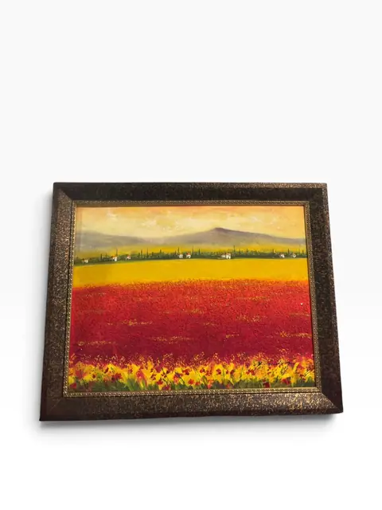
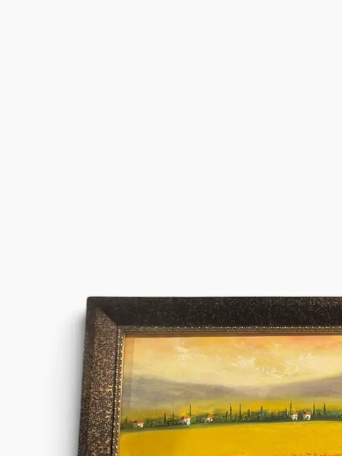
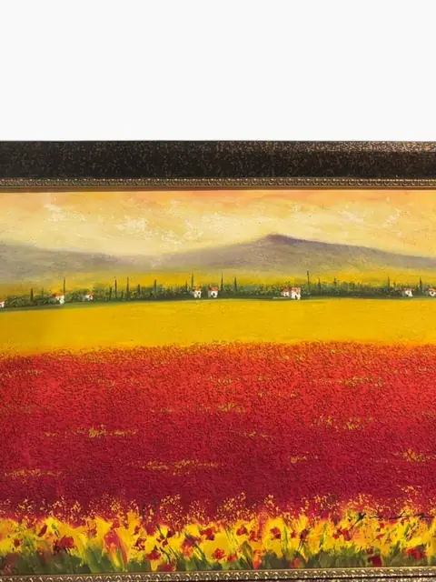
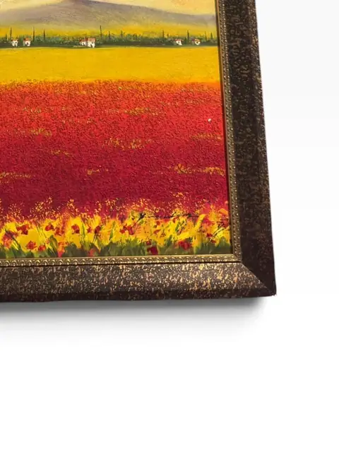
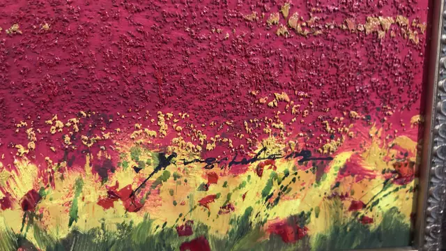
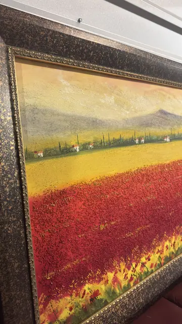
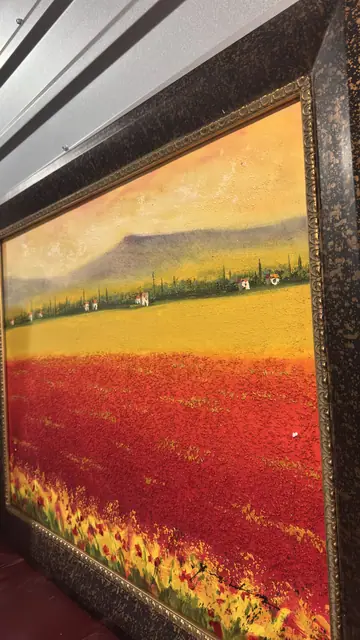

Paintings & Prints
Field of Poppies at Dusk — Oil on Canvas, Signed
· 20th century
Price Upon Request








About the Item
A vast field of poppies burns crimson beneath a golden Tuscan sky, cypress trees and white farmhouses tracing the distant hills. Painted in expressive, tactile strokes and set in a rich antique-dark wood frame, this is a dramatic romantic landscape with a near-matching companion piece (also offered). Made for a grand salon wall. Signature lower right, illegible at this resolution. No tape-measure photo — dimensions not legible. Near-companion composition to ilan_011 (same workshop series, different framing).
Details
- Creation Year:
- 20th century
- Medium:
- Oil on canvas
- Period:
- 20Th
- Condition:
- Offered in the condition shown in the photographs.
- Reference Number:
- VO-280